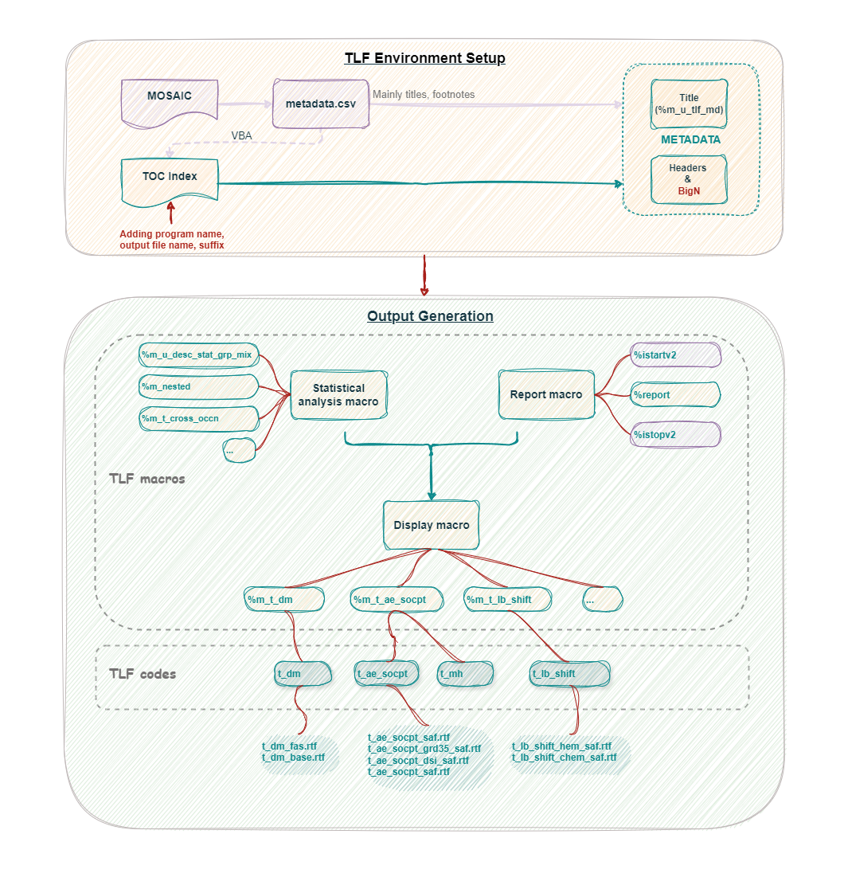
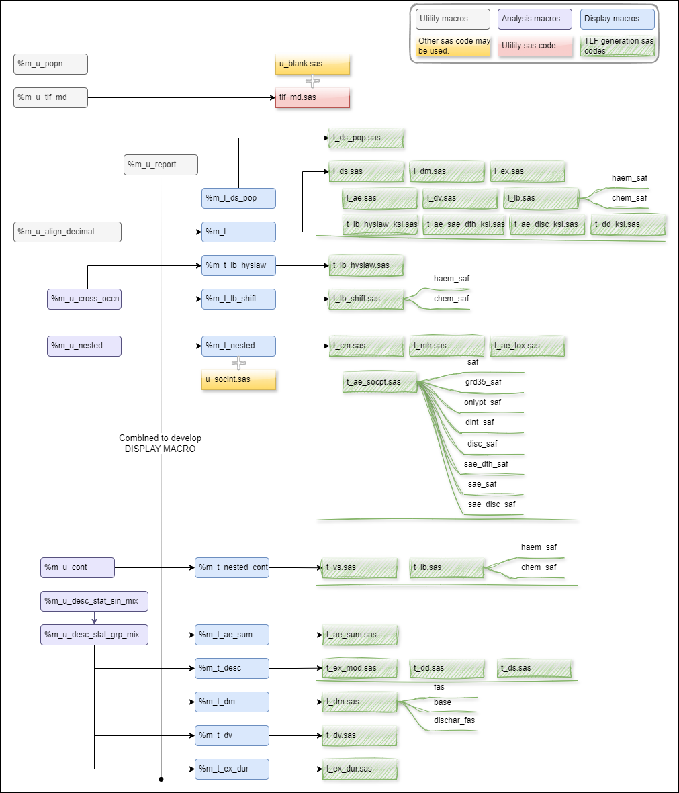
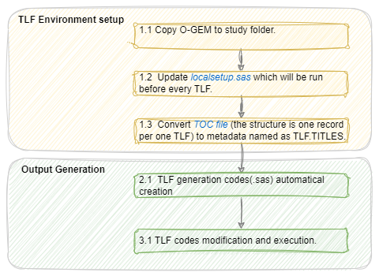

OGEM User Manual
Project Introduction
The OGEM User Manual is a multilingual documentation project built with HonKit, designed to provide users with clear and easy-to-understand product usage guides. This project supports both English and Chinese documentation and provides an excellent reading experience.
Features
- Multilingual support (English, Chinese)
- Responsive design, supporting multiple devices
- Clear document structure and navigation
- Search functionality
- Version control support
- Automated build and deployment
Project Structure
ogem/
├── docs/ # Documentation source files
│ ├── en/ # English documentation
│ └── zh/ # Chinese documentation
├── _book/ # Build output directory
├── node_modules/ # Dependencies
├── .gitignore # Git ignore configuration
├── book.json # HonKit configuration file
├── ModHistory.md # Modification history
├── package.json # Project configuration file
└── README.md # Project documentation
Requirements
- Node.js >= 14.0.0
- npm >= 6.0.0
- Git
Quick Start
Install Dependencies
npm install
Local Preview
npm run serve
Build Documentation
npm run build
Documentation Writing Guide
- All documentation source files are stored in the
docsdirectory - Write documentation in Markdown format
- Store image resources in the
docs/assetsdirectory - Follow the documentation structure specifications
Contribution Guide
- Fork this repository
- Create your feature branch (
git checkout -b feature/AmazingFeature) - Commit your changes (
git commit -m 'Add some AmazingFeature') - Push to the branch (
git push origin feature/AmazingFeature) - Submit a Pull Request
Version History
See ModHistory.md
License
This project is licensed under the MIT License - see the LICENSE file for details
User Manual Origin Project
Project Overview
This project aims to provide a comprehensive solution for managing and generating user manuals. It is designed to be user-friendly and efficient, making documentation creation and maintenance easier for teams.
Features
- Git-based version control for documentation
- Collaborative editing capabilities
- Support for multiple documentation formats
Project Structure
/
├── README.md # Project documentation
└── [Additional files and directories will be added as needed]
Getting Started
Prerequisites
- Git installed on your system
- Appropriate access permissions to the repository
Installation
Clone the repository:
git clone [repository-url] cd usermanualoriginConfigure Git (if not already done):
git config --global user.name "Your Name" git config --global user.email "your.email@example.com"
Usage
[Usage instructions will be added as features are implemented]
Contributing
- Fork the repository
- Create your feature branch (
git checkout -b feature/YourFeature) - Commit your changes (
git commit -m 'Add some feature') - Push to the branch (
git push origin feature/YourFeature) - Create a new Pull Request
Version History
- Initial setup: 2025-04-18
License
[License information to be added]
Contact
[Contact information to be added]
Last updated: 2025-04-18
Introduction
This user manual provides guidance for O-GEM macros.
O-GEM is Outputs Generation via Efficient Macros, which is a SAS macro system including display, analysis, utility macros and TLF generation codes. It aims to develop unique display macros for unique TLF format, so that programmers could just call display macros in respective TLF codes to generate outputs.
O-GEM consists of two parts: TLF environment setup and output generation via TLF macros.
- TLF Environment Setup Create METADATA used in every output, including titles, footnotes, program names and output file names. The other metadata includes column headers such as displayed treatment group, BigN across TLFs.
- Output Generation
- For every unique TLF template, there will be a display macro.
- One TLF generation code could generate multiple outputs by calling a display macro multiple times.

General Rules
- Standardized datasets for QC
- Name of datasets (.sas7bdat) is the same as output (.rtf).
- Name of variables are COL1, COL2, COL3, … (COL0 for page by value).
- Label of variables is the same as column headers in output which will be used for reporting.
- Adherent to AZSOL
- Display macros are developed based on AZSOL.
- Follows AZ TABLES AND LISTINGS OUTPUT FILE FORMAT.
- Follows Program and Output Naming Conventions in AZ Oncology Programming.
Structure and Dependency
Below is the structure and dependency of macros and TLF generation codes (currently covers ONCO Core TLF but could also be applied to other TLF). More information stored in O-GEM Index Outputs Index tab, Column O(Program name), Column P(Suffix), Column Q(Output file name) and Column R(Display macro used).
| File | Location in Entimice |
|---|---|
| Macros | root/global_tools/oncology/o_gem/pgm/v1/tlf/prod/macro |
| u_blank.sas | root/global_tools/oncology/o_gem/pgm/v1/tlf/prod/macro |
| u_socint.sas | root/global_tools/oncology/o_gem/pgm/v1/tlf/prod/macro |
| tlf_md.sas | root/global_tools/oncology/o_gem/pgm/v1/tlf/prod/program |
| Generation codes of Core TLF | root/global_tools/oncology/o_gem/pgm/v1/tlf/prod/program |

How to Use
There are 3 steps:
- TLF Environment setup
- Copy O-GEM macros and tlf_md.sas to study reporting event folder.
- Update localsetup.sas which will be run before every TLF.
- Convert TOC file (the structure is one record per one TLF) to metadata named as TLF.TITLES.
- TLF generation codes(.sas) creation automatically.
- One Step to generate every code for each TLF in TOC file and a batch run code, batch_tlf.sas.
TLF codes modification and execution.

More details seen in how to use O-GEM.
The centralized O-GEM is located in:
- Entimice 'root/global_tools/oncology/o_gem/pgm/v1/tlf/prod'
- SharePoint O-GEM
Resource
| Item | Description | Type |
|---|---|---|
| O-GEM SharePoint | ||
| O-GEM Index.xlsx | An index file which includes AZSOL template ID, corresponding O-GEM macros used, and names of TLF generation code. It has created hyperlinks for different TLF and also has flagged Core in Output Index tab. | Index |
| O-GEM User Manual.url | HTML format for easy reference (GitHub account needed). | User Manual |
| TOC_INDEX.xlsx | Example TOC file | Example |
| DXXXXXXXXXX_TiFo_MOSAIC_CONVERT.xlsm | Convert csv metadata exported from MOSAIC via VBA to a TOC file which could be used in O-GEM. More information please see in O-GEM User Manual How to use page. | Tool |
| localsetup.sas | An example localsetup including headers (BigN, descriptive texts) generation. | Example |
| root/global_tools/oncology/o_gem/pgm/v1/tlf/prod | Entimice location | Program |
Revision History
| Revision | Effective | Summary of Changes |
|---|---|---|
| Macro/Utility 1.0 | 24Sep2024 | Initial version |
| UM 1.0 | 24Sep2024 | Initial version |